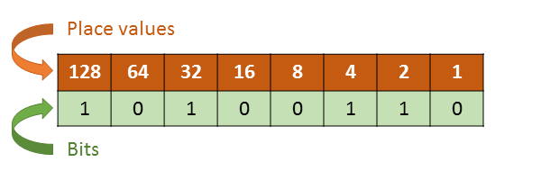

Fundamentos de la programación.
¿Como funciona un PC?
Los dispositivos digitales funcionan con electricidad, lo que hace imposible darles instrucciones con lenguaje natural. Solo son capaces de entender dos estados de la misma, encendido y apagado.
Estos estados se ven representados con
codigo binario
los cuales conforman
bits y bytes.
Los primeros ordenadores fueron programados con un conjunto de instrucciones predeterminadas y muy limitadas asignadas a un byte cada una, por poner un ejemplo rapido, el byte (00000001) podria representar la orden de sumar dos valores, (cabe aclarar que esto es solo un ejemplo).
Pero programar usando codigo binario (tambien llamado lenguaje maquina) es muy complicado, por lo que los desarrolladores de software lo simplificaron creando lenguajes de programación.
Lenguajes de programación
Los lenguajes de programación son un conjunto de instrucciones que simplifican la creación de software para los medios digitales.
Se clasifican en bajo, medio y alto nivel, cada uno con sus ventajas y desventajas.
Los lenguajes de bajo nivel son los mas cercanos al lenguaje maquina, son complicados de entender y dominar, pero son mas rapidos que el resto, ya que la maquina está mas cerca de interpretarlos directamente.
Los lenguajes de alto nivel son los mas similares al lenguaje natural, por lo general están en inglés y tienen conceptos bastante similares entre la gran variedad que existe, algunos son interpretados y otros compilados.
Los lenguajes de nivel medio son un poco de ambos mundos, son mas lentos que los de bajo nivel, pero mas rapidos que los de alto nivel, son mas dificiles de entender que los de alto nivel, pero mas faciles que los de bajo nivel.
Javascript
Javascript es un
lenguaje de programación interpretado
que funciona del lado del cliente.
Nació como un intento de unificar la funcionalidad de los navegadores web, y funciona para dar interactividad a las paginas web. Es un lenguaje de alto nivel, debilmente tipado, vease que es poco estricto con su sintaxis a la hora de programar.
Funciona en cualquier navegador web y requiere poco para usarlo, lo que lo hace ideal para principiantes.
Ademas, la comunidad ha logrado llevarlo al lado del servidor, e incluso al desarrollo de aplicaciónes, volviendolo un lenguaje muy versatil
Codigo Binario
El codigo binario, como su nombre lo indica, consta de 2 numeros, 0 y 1, los cuales funcionan similar a los numeros decimales que solemos usar.
0,1,2,3,4,5,6,7,8,9...
Nosotros usamos numeros del 0 al 9, y cuando se nos acaban agregamos un numero a la izquierda, (10) y a la derecha regresamos al principío.
Con los numeros binarios es igual:
0, 1, 10, 11, 100, 101, 111, 1000, 1001, 1011...
Lenguajes interpretados vs compilados.
Los lenguajes interpretados son lenguajes que se ejecutan linea por linea de codigo, lo cual hace que sean faciles de usar y corregir errores rapidamente, pero son mas lentos en comparación a los compilados, ya que el interprete es similar a un traductor en tiempo real para ejecutar las instrucciones de lenguaje de programacion a codigo maquina.
Por el contrario los compilados, al acabar de escribir el codigo pasan por un compilador, que covierte el texto plano a lenguaje maquina, capaz de ejecutarse a bajo nivel con mayor velocidad, pero consume tiempo al compilarse y si hay errores es mas lento corregirlos.
Bits y bytes
En informatica, a cada numero binario se le conoce como bit, este puede valer tanto 0 como 1.
Los Ordenadores funcionan con bits pero entienden bytes, los cuales están conformados de 8 bits(00000000). Este es el lenguaje binario de la informatica, cada byte representa un numero:
Los valores se leen de derecha a izquierda, el primer bite vale 1 y crece en un exponencial de 2, lo que significa que si el primer valor es 1, el segundo es 2, el tercero 4, el cuarto es 8 y asi sucesivamente.
los valores de cada numero representado con un 1 (Encendido) se suman, lo que da como resultado el valor del byte.

Por ejemplo el valor del numero 10100110 da como resultado 166, ya que es la suma de:
(2 + 4 + 32 + 128).